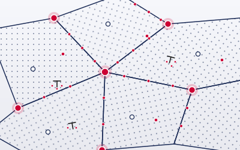
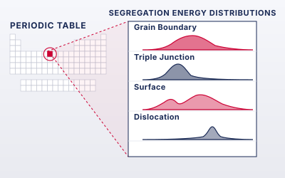
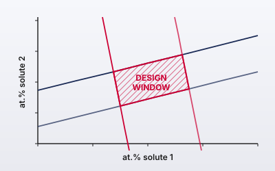

Atomistic foundations and building blocks for designing polycrystalline materials.
Goals of Imperfection Engineering Group (IEG) are to provide a better understanding of defect structure-property relationships through accelerated modeling and simulations, and to provide materials defect genomes with a focus on defect-defect interactions. The ultimate aim is to apply the accelerated computational frameworks and genomic databases for discovery and design of engineering materials via defect engineering.

Defects, grain boundaries, and triple-junction networks — and how they govern polycrystalline behavior.

Periodic table maps of defect chemistry, building the genome that links structure-property relationships in crystalline materials

System design approach in combination with ML-accelerated materials defect genome for extreme environment materials design